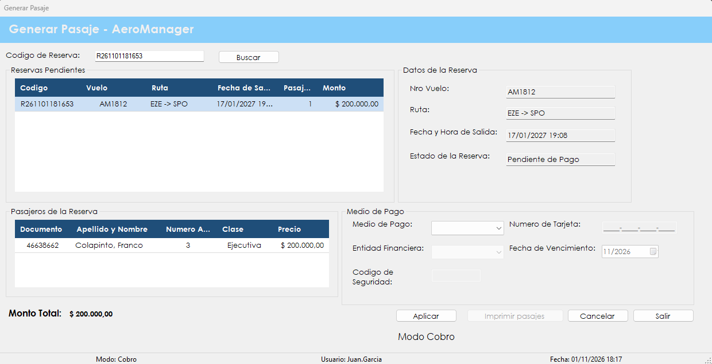

Es el segundo paso de la venta: se cobra una reserva pendiente, se emiten los pasajes y se genera la factura.
Una reserva por sí sola no es una venta cerrada: los asientos quedan apartados, pero falta el pago. En esta pantalla se registra el cobro, en efectivo o con tarjeta, y el sistema emite un pasaje por cada pasajero de la reserva y una factura por el total.
Con el pago aprobado, la reserva pasa a estado Confirmada, los asientos quedan ocupados y la reserva deja de figurar entre las pendientes. Desde la misma pantalla se puede obtener el comprobante en PDF para entregárselo al cliente.
Desde el menú principal, en Venta de Pasajes › Generar Pasaje. La sección aparece si el rol del usuario incluye la patente de venta de pasajes.

| Control | Para qué se usa |
|---|---|
| Codigo de Reserva | Código que informó el sistema al crear la reserva. |
| Buscar | Carga la reserva correspondiente al código escrito. |
| Reservas Pendientes | Grilla con Codigo, Vuelo, Ruta, Fecha de Salida, Pasajeros y Monto de las reservas sin cobrar. Un clic en una fila carga esa reserva. |
| Datos de la Reserva | Muestra Nro Vuelo, Ruta, Fecha y Hora de Salida y Estado de la Reserva. |
| Pasajeros de la Reserva | Grilla con Documento, Apellido y Nombre, Numero Asiento, Clase y Precio. |
| Medio de Pago | Efectivo, Débito o Crédito. Este grupo se habilita al cargar una reserva. |
| Entidad Financiera | Visa, Mastercard o American Express. Solo para pagos con tarjeta. |
| Numero de Tarjeta | Número completo de la tarjeta. Solo acepta dígitos. |
| Fecha de Vencimiento | Mes y año de vencimiento de la tarjeta. |
| Codigo de Seguridad | Código de la tarjeta. Solo acepta dígitos. |
| Monto Total | Importe total de la reserva. |
| Numero de Factura | Después de emitir, muestra la factura generada. |
| Aplicar | Registra el pago y emite los pasajes y la factura. |
| Imprimir pasajes | Se habilita después de emitir. Genera el comprobante en PDF y lo abre. |
| Cancelar | Limpia la pantalla para empezar con otra reserva, sin cobrar nada. |
| Salir | Cierra la pantalla. |
Si más adelante se necesita ese comprobante otra vez, se lo puede reimprimir desde Comprobantes de pasaje.
| Situación | Qué significa y qué hacer |
|---|---|
| "Debe ingresar un código de reserva." | Se presionó Buscar con el campo vacío. |
| "Reserva no válida o inexistente." | No hay ninguna reserva con ese código. Hay que revisarlo o elegir la reserva desde la grilla. |
| "La reserva no se encuentra pendiente de pago." | La reserva existe, pero ya no se puede cobrar, por ejemplo porque ya fue pagada. Sus comprobantes se consultan en Comprobantes de pasaje. |
| "Error al buscar la reserva:" seguido del motivo | No se pudo completar la búsqueda. Después de los dos puntos se indica la causa técnica. |
| "Debe seleccionar un medio de pago." | Hay que elegir Efectivo, Débito o Crédito antes de presionar Aplicar. |
| "El pago fue rechazado por la entidad financiera. Revise los datos de la tarjeta e intente nuevamente." | El pago no se aprobó y no se emitió nada. La pantalla conserva la reserva para intentar de nuevo, con otra tarjeta o con otro medio de pago. |
| "Error al generar el pasaje:" seguido del motivo | Después de los dos puntos se indica la causa. Si dice "Los datos de pago son inválidos.", faltó un dato de la tarjeta, el número está incompleto o la tarjeta está vencida. La pantalla se limpia y la reserva sigue pendiente: hay que elegirla otra vez. |
| "Pasajes generados correctamente. Factura:" seguido del número | El cobro se completó. Se informa el número de la factura emitida y ya se puede imprimir. |
| "No hay un comprobante emitido para imprimir." | Todavía no se emitió ningún pasaje en esta operación. Primero hay que cobrar la reserva. |
| "Error al generar el documento:" seguido del motivo | Los pasajes ya están emitidos, pero no se pudo crear el PDF. Después de los dos puntos se indica la causa. Se puede reintentar o usar Comprobantes de pasaje. |
| "No hay reservas pendientes de pago." | Es un aviso: no hay nada para cobrar. Las reservas se crean en Generar reserva. |
| "Error al cargar las reservas:" seguido del motivo | No se pudo traer la lista de pendientes. Después de los dos puntos se indica la causa técnica. |
| "Error al cargar la reserva:" seguido del motivo | No se pudo abrir la reserva elegida en la grilla. Después de los dos puntos se indica la causa técnica. |
| "La operación se registró correctamente, pero no pudo asentarse en la Bitácora:" seguido del motivo | Los pasajes se emitieron, pero el evento no quedó en la bitácora. Después de los dos puntos se muestra el motivo técnico. Conviene avisarle al administrador. |
Atención. En esta versión del sistema, la autorización del pago está simulada: AeroManager no se conecta con una entidad financiera real. El pago con tarjeta se aprueba cuando el último dígito del número es par y se rechaza cuando es impar.